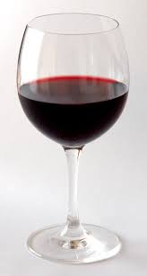
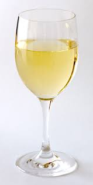

Explore
 Wine is an alcoholic beverage made with the fermented juice of grapes. Technically, any fruit is capable of being used for wine (i.e., apples, cranberries, plums, etc.), but if it just says “wine” on the label, then it’s made with grapes. While there are six primary wine categories (red, white, rosé, sparkling, dessert, and fortified), this website will focus on two types of wine: Red or White